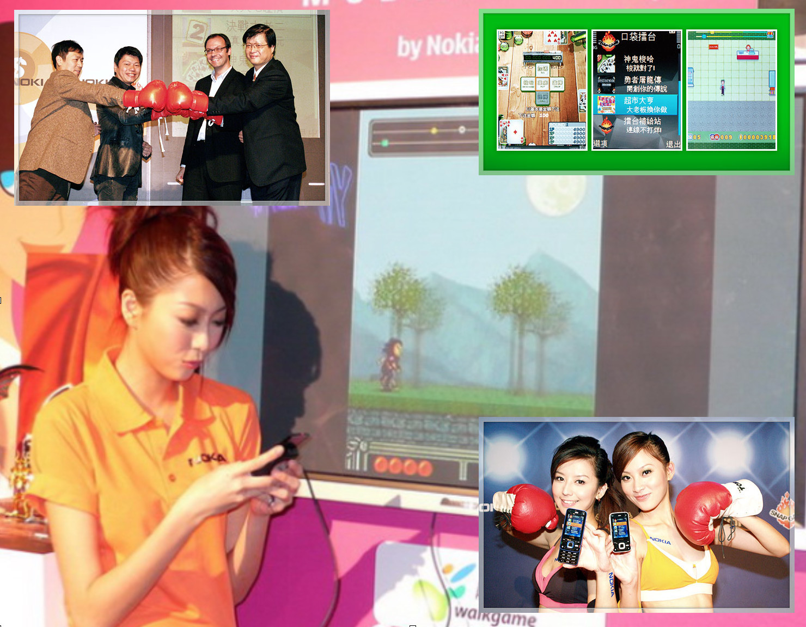

作品詳細履歷表
關於我
中文名字：游正坤
英文名字：Kurt
興趣：設計遊戲，寫程式，畫畫。
臉書：https://www.facebook.com/profile.php?id=1447955666
個人產品粉絲團：OFFLINE臉書紛絲團
一. 功能型手機(Feature Phone) - 負責專案
2005年 水管大師Pipe Master(J2ME)
任職於Walkgame時候開發的動作類遊戲，J2ME平台，負責所有程式撰寫。
個人第一個遊戲專案，獨立開發，擬3D的動作射擊遊戲，遊戲方式當時雖然很有創意，可惜當時經驗較不足，並沒有把遊戲完成的很好，學習到很多遊戲業的知識，仍舊是我最喜愛的作品。。
2006年 勇者屠龍傳Dragon Frank(J2ME)
任職於Walkgame時候開發的動作類遊戲，J2ME平台，負責所有程式撰寫。
勇者屠龍傳是一款類似獸王記的橫向動作遊戲，當時手機硬體受限的情況之下，最小支援到128x128畫面大小，且記憶體僅有512KB的手機，從下圖可以看見整個遊戲檔案大小僅有190KB。
此款遊戲是公司主推的作品之一，當時有代表公司參與展出，因為通過Nokia認證，所以在當時的Ovi Store也有販售。
2006年 勇者屠龍傳Dragon Frank (J2ME+Nokia連線對戰)
任職於Walkgame時候開發的動作類遊戲，J2ME平台，負責所有程式撰寫。
介接Nokia當時強力推廣的Snap技術，是一種多人線上遊戲平台SDK，當時的隨身遊戲選擇頗受歡迎的勇者屠龍傳做為基礎，然而那時候的連線技術不佳，大部分手機仍然是2.5G，無法即時連線運算，所以只應用上傳分數的方式進行互動。

照片為勇者屠龍傳和的超市大亨的Nokia Sanp發表會
相關報導
2007年 釣魚大師 Fishing Master(J2ME)
任職於Walkgame時候開發的運動類遊戲，J2ME平台，負責所有程式撰寫。
比較輕鬆休閒的一款遊戲，收集魚類的樂趣，有實際釣魚的過程，增加遊戲性。合作的遊戲企劃非常有想法，是我蠻特別的一次合作經驗ㄋ。
2007年 Cube(J2ME)
任職於Walkgame時候開發的益智類遊戲，J2ME平台，負責所有程式撰寫。ㄋ
一位蠻另類的遊戲企劃所設計的創新益智遊戲，因為邏輯複雜，很容易出現沒有考慮的狀況，前後開發時間總共超過四個月，然而也因為規則複雜，玩家也難以上手。
2007年 超市大亨 Super Market Typcoon(J2ME online)
任職於Walkgame時候開發的經營類遊戲，J2ME平台，負責所有程式撰寫。
捨棄Nokia Snap，改使用自製連線套件所開發的線上遊戲，此款經營類的遊戲當時意外大受歡迎，耐玩度很高，所以陸續有推出多個版本。
2008年 暗棋(J2ME)
任職於Walkgame時候開發的益智類遊戲，J2ME平台，負責所有程式撰寫。
第一次設計棋類人工智慧，挑戰性頗高，第一版人工智慧經驗不足，會有死局的情況，後續版本才陸續改良。
2008年 暗棋連線版(J2ME)
任職於Walkgame時候開發的益智類遊戲，J2ME平台，負責所有程式撰寫。
使用自製連線套件開發將單機版本暗棋成線上遊戲，連線速度是當時的大問題。
2008年 麻將王連線版的Patch程式(PC)
任職於Walkgame時候開發的益智類遊戲，J2ME平台，負責升級程式撰寫。
時第一次參予大型PC遊戲，也是個人在該公司最後負責的專案，當時大環境狀況不足支撐這個專案，此專案其實並沒有真正被推廣，是一次個人參與真正大型開發的寶貴經驗。
相關報導
2009年 重裝三國(J2ME)
動作類遊戲，J2ME平台，負責主核心程式撰寫。(Joymaster) 極致行動科技第一個負責的專案，帶領另一個助理工程師，協同完成。 這個專案是類似三國無雙的玩法，也開發了關卡編輯器，是自己第一次主導的大專案，開發時間連同遊戲引擎約一年，由於當時手機硬體已經漸漸提升，但是卻是屬於過渡時期，好壞差異頗大，所以研發引擎摸索過程非常辛苦，也為重裝三國二代的開發打下基礎。(重裝三國二代之後，則是由這位助理工程師在2010年度專案開發完成，自己則是去開發另一款2010年的年度專案。)
相關報導
2010年 魔劍鎮魂曲(J2ME)
任職於極致行動科技時候開發的角色扮演類遊戲，Android平台，負責主核心程式撰寫。
回合制戰棋類遊戲，以完全複製經典作品聖火降魔錄系列為目標，並且加上新系統的設計，是該年極致行動科技公司的年度大作之一，這個專案自己負責主程式核心開發，帶領另一位助理工程師協助部分人工智慧設計。
複雜的屬性相剋設定、豐富的動畫、地圖戰鬥系統是開發這款遊戲最花時間的部分。這款也是自己遊戲工作裡最後一個J2ME專案。
相關報導
二. 智慧型手機(Smart Phone) - 負責專案
2010年 滾石行動的奶油獅打磚塊 (Android)
個人外包接案的益智類遊戲，Android平台，負責所有程式撰寫。
朋友介紹的外包合作案件。這一款遊戲特地先開發了打磚塊的核心，然後才實際進行專案開發。除了是自己第一款開發Android平台的遊戲，也是自己第一次承接公司以外的外包專案。遊戲本身開發還算順利，遭遇比較多的問題反而是當時Android 1.6以前的SDK，有許多分版限制需要處理。
2011年 魔劍鎮魂曲(Android)
任職於極致行動科技時候開發的角色扮演類遊戲，Android平台，負責主核心程式撰寫。
將J2ME版本系統移植到Android平台上面，加入觸控。除了遊戲邏輯之外，其他部分完全重寫，遊戲美術也全部重新製作，這個專案自己仍舊是負責主程式核心開發，並帶領另一位助理工程師協助部分界面的設計。這一個作品有到日本參展，也是玩家討論比較多的一個版本，玩家之間非常的熱心寫攻略與心得交流，也因此難免出現有玩家自行修改存檔和盜版嚴重的問題。
2010年完成了SRPG作品魔劍鎮魂曲系列，程式部分並不是寫得最好，卻是自己目前覺得最滿意的作品，目前仍然可以看到玩家持續在討論遊戲的攻略，Android版本也多次到日本和韓國參展，很有成就感。
相關報導
2011年 發太郎大老二Online Game (iOS)
任職於極致行動科技時候開發的博弈類遊戲，Android平台，負責主核心程式撰寫。
極致行動科技的發太郎系列作品第二部。這個專案由自己負責的第一款iPhone遊戲開發，負責大老二紙牌遊戲的多人網路處理、遊戲邏輯和遊戲畫面的開發，遊戲大廳則是介接該系列作原來的大廳，使用的是iOS上面頗為知名的cocos2d引擎。
2011年 爆爆方塊單機版本(Android/iOS)
任職於極致行動科技時候開發的益智類遊戲，Android平台，負責主核心程式撰寫。
這一個專案並不是使用Android平台的Java語言完成，改使用C++語法做為開發語言，最後使用Android NDK編譯到Android平台上面執行，主要研發目標是研發跨平台遊戲技術，使用C++版本的cocos2d-x引擎，可直接Porting到iPhone平台上面。
照片為參加遠傳S市集得獎照片-APP上癮症獎
2012年 博弈2D擬真賽馬(iOS)
任職於新加坡商瑞嘉科技時候開發的益智類遊戲，iOS平台，負責主核心程式撰寫。
今年加入瑞嘉科技公司(OneLab) 有幸的和台灣幾位Flash開發領域幾位台灣有名的前輩共事：
Ben - 邦邦的部落格
Ticore - Ticore Blog
雖然我們使用不同的技術（Flash、Flex、AIR、ActionScript），但是對於開發上有著相同的觀念，討論的過程中也學習成長了很多。我在這裡學習了如何以HTML5來開發遊戲的技術，深入研究JavaScript程式語言，並且開發出數款博弈遊戲上線。
這個專案是我另一個以cocos2d-x遊戲引擎完成的產品，是一個iPad的大型專案。
2012年 帶著故宮走(Android)
個人外包接案的大型應用程式，Android平台，協同合作程式撰寫。
故宮博物院第一次開發APP的案子，是由前公司朋友介紹委託我進行，然後由我主導開發並且和我一位朋友程式設計師協助測試合作完成。
這個專案應用內容很廣，GPS定位導航，二十個文物互動（手勢 震動 重力偵測等等），資料同步更新，客制化的使用者介面，整個專案開發到結案的時間約半年，期間和政府單位以及太極動畫廠商的合作的經驗，中途其實預過多次板和設計，因為有許多文物圖片可供瀏覽，故宮提供的圖片的解析度非常的高，在技術上我們克服了如何在 Android平台上處理超巨大圖形的方法。
相關報導
下載連結
官方影片
2013年 Slot Game(HTML5)
任職於新加坡商瑞嘉科技時候開發的益智類遊戲，Web平台，負責博弈遊戲程式撰寫。
今年公司嘗試在手機上開發HTML5遊戲，由我負責研究和開發， 陸續完成了許多產品和實驗應用。
今年接觸的技術和我之前的經驗比較有差異，期間深入學習JavaScript語法，HTML5，CSS，以及HTML5引擎EaselJS, TweenLite，還有PhoneGap的Wrapper Framework等等...
2013年 實驗性測試的動作遊戲(HTML5)
線上遊戲網址：
https://dl.dropboxusercontent.com/u/24490474/attackonmeat/web/AttackonMeat.html
正式產品：SlotGame
2014年 品牌系列(iOS)
任職於香港商英迪思公司時候維護的品牌產品系列，iOS平台，負責主核心程式撰寫。
香港商英迪思是一家全球的產品直銷公司，主打歐洲品牌高級產品系列，在香港等地販售，我負責的此系列產品部分有五個，以相同的架構模組來呈現不同的產品。
應用程式介紹
Estebel全系列芳香精油與保養品，遵循古法煉製，輔以高科技製作技術，以純淨的水質，獨家的配方，加上精選的植物素材，完美地結合了來自普羅旺斯的優質精油原料，及格拉斯頂級的專業製造技術。更針對亞洲地區的空氣環境及東方人的體質、肌膚狀況，創造出完全符合東方人肌膚需求的保養產品。利用天然植物能量，為您排除現代生活中龐雜壓力所造成的疲憊壓力，細心呵護您每一吋肌膚，使您身心舒暢，恍如置身於普羅旺斯。
功能介紹：
- 產品：透過精美的介面及詳盡的圖文介紹，提供您最完整的產品知識！
- 故事：詳細的品牌與薰香催化方式的介紹，使您更加了解Estebel背後起源及產品技術！
- 影音: 藉由影音之介紹讓您更加認識集團之商品資訊!
- 最愛：可將產品加至最愛列表快速瀏覽，讓您方便查找,無需再從眾多產品中費時尋尋覓覓，方便又快速！
- 查存：提供查詢小幫手讓您隨時查詢Estebel產品的可出貨狀況，只要事先查詢，即可完全避免到達零售點現場卻訂不到產品的風險！

2014年 個人上架作品 - BubbleTask(iOS)
個人上架的第一個iOS平台商業個人產品。
一種新型態的便條紙應用程式。使用者可以方便的管理自己每天的小工作或者當成筆記也可以，支援人工語音讀出便條紙上面的文字功能，畫面以有趣的物理特性來表現便條紙。
應用程式介紹
What do you want to do today?
No more boring note lists!!
BubbleTask is a fast, simple and easy to use task manager. Write it down immediately and you'll never forget anything important again.
How to use it?
- Long press on the screen to add a Bubble.
- Double-tap the Bubble to delete it.
Features:
- Create and edit Bubble.
- Bubble groups.
- High performance bouncing ball physics simulation.
- Supports 'Text-to-Speech'.
- Supports 4 digit passcode or Touch ID security.
- iCloud support.
BubbleTask Lite - is a freeware, feature limited version.
- 9 ball types.
- A bit of advertisements.
Give it a try!
BubbleTask make your life easier.
Please feel free to contact us at poga.service@gmail.com if you have suggestions, feature requests, or bug reports. your feedback is appreciated.
本程式只有英文版。
2015年 個人實驗作品 - GreenCam(iOS)
源自於電影合成特效的靈感開發的實驗作品。後來發現製作成魔術影片上傳Youtbue似乎比直接上架來得有趣，之後只在同事之間流傳。
GreenCam 投影模式展示：把照片投影到綠色的紙上面
GreenCam 穿透模式展示：把背景投影到綠色的紙上面
2015年 個人實驗產品 - MikuCam(iOS)
個人實驗產品
以臉部辨識為靈感開發的實驗作品，能夠即時判斷臉部角度是一個技術上的突破，純樂趣。當時採用GPUImage的第三方Library完成。
2015年 個人上架產品 - FilmLike(iOS)
個人上架產品
可以多種即時電影濾鏡拍攝微電影，只提供支援iPad版本。
應用程式介紹
簡單, 容易並且很棒! 微電影相機（FilmLike）是一個專門拍攝微電影的應用程式 而且非常容易使用。
微電影相機（FilmLike）的特色：
- 簡單的使用者介面
拍攝屬於自己的微電影從來沒有像這樣的容易過。 - 超過100種高品質即時濾鏡可以選擇 所有濾鏡特效都是免費的，而且他們是可以疊加的。
- 支援HD(16:9)拍攝 支援裝置：iPad2, iPad3, iPad4, iPad Air, iPad Mini, iPad Mini2...
- 聲音錄製是可選的 你可以選擇只錄製影像而不要錄製聲音。。
- 支援自動對焦
- 即時預覽影片 儲存到影片捲之前快速預覽你的影片。
備註: POGA.tw 是當時個人自組的工作室名稱，已不再使用，之後的個人上架都改直接以個人名字KurtYu為商標。
2015年 iTrade(iOS)
任職於香港商英迪思公司開發的銷售應用程式，iOS平台，負責主核心程式撰寫。
iTrade是提供公司內部直銷機制的手機應用程式(企業發佈方式)，可以即時查詢產品資料與會員資料，並提供專屬活動，門市活動，項目推薦與即時的問卷調查功能。作為提供台灣香港與內地的客戶溝通媒介。
2016年 PhonCare（Android App）
PhonCare軟體在訊息交換格式，採用由國際組織OGC(Open Geospatial Consortium)所制定之地理簡訊共通交換標準。因此，使用者除了可以安裝Phoncare軟體來相互查詢/交換彼此位置之外，若其它的LBS相關軟體也採用此一標準，亦可與其它LBS軟體之間運行地理資訊的交換。此一應用將可不限定於單一平台及單一應用程式，對於科技關懷應用系統，可擴及更大的使用群眾。 這是我進入工研院第一個完成上架的應用程式。
APP下載連結
http://cn.appszoom.com/android_applications/tools/phoncare_btqce.html
2016年 阿米計畫 - 台灣世界展望會合作案 (Android）
任職於究心公益科技，負責與台灣世界展望會合作阿米計畫的Android版本開發。
阿米計畫是由世界展望會推出的第一個全球華人連結計畫。
應用程式介紹
什麼是「阿米計畫」?
阿米計畫是由世界展望會建立的一個全新社交公益平台。 在阿米計畫中，您將看見世界各地兒童的需要，並能為此揪團建立愛心圈，用最實際的行動，幫助兒童迎向豐盛生命。
「阿米計畫」關懷的兒童焦點: A. 水資源與兒童健康: 為偏遠地區兒童提供乾淨飲水與基礎衛生設施 B. 兒童教育: 為貧困兒童鋪上一條安心讀書、受教育的路 C. 生計發展: 幫助社區自立、擺脫貧窮，進而改善兒童的生活與環境安全
「阿米計畫」平台介紹
功能應用: -> 從「看見需要」中瀏覽並選擇一個兒童服務工作項目，為這個項目建立自己專屬的「愛心圈」(Love Circle)。 -> 邀請志同道合的朋友加入自己的「愛心圈」，為孩子依據募款目標金額，於您自訂的期限內募集資源。 -> 從「公開的愛心圈」或「朋友的愛心圈」中，查看其他人的愛心圈，選擇加入，認識與您一樣有愛心的公益夥伴。 -> 「愛心圈」中可以加入照片、影片連結和文字，分享您精彩的「愛的故事」，贏得更多新朋友。
特殊功能:
- 社群登入 – 臉書或G+擇一登入，簡單快速
- 個人化設計 – 依用戶心情設定，每天一則名言小語，還可以用LINE分享給朋友喔
- 愛心圈進度 - 募款進度以百分比顯示，一目了然
- 記錄我的足跡 - 每一個行動都能累積阿米金幣，也可收集成就徽章，記錄自己愛心的足跡
相關報導
下載連結
官方影片
2016年 OFFLINE - 已讀不回(Android)
個人開發與商業經營的架上Android應用程式。
個人第一個成功經營的Android App。卻是個人開發期最短的App，利用2016年的過年連假時間完成。目前已經成功經營一年多，有效使用者約兩萬人，每日活躍使用數約1500人左右。
已讀不回打中使用者的心理，雖然同樣的產品已經在市場一年，這個產品推出唯一能夠顯示貼圖的已讀不回，成功吸引不少用戶轉為使用我的產品。
目前每日新安裝人數約在100人左右，每月廣告營收和內購營收也持續增加中，以台灣與泰國為最多使用者用戶來源。
Android版本下載連結
2016年 Clickers（Android）
Clickers是替國外社群設計的工具應用程式。Clickers是一個非營利組織，該組織的成立目的是希望以社群力量來過濾龐大的網路資訊，找出有意義與正確的資料，讓各國救災防災能夠使用，至於要怎麼過濾網路世界上的資訊，就需要一個簡便的應用程式，這就是Clickers。
考量到Clicker的使用者們是茶餘飯後的時間才會進行的活動，個人採用翻頁式搭破側邊欄的設計，讓單手也可以使用。
2016年 橘子活動遊戲（HTML5 Game）
任職於究心公益科技，公司的活動產品，負責Web遊戲開發。
這是一個 Web Game，我以HTML5寫成，支援替台灣橘農推廣活動寫的小遊戲。雖然我並不是WebGame或者JavaScript的專家，但是寫遊戲其實程式語言只是其次，重點還是在於怎麼用和遊戲設計本身，由於我早年的經驗，這遊戲的設計和開發並沒有花我太多時間，約兩個禮拜，卻可以帶來很不錯的成果，橘子活動很非常成功。

遊戲網址
http://kurtyu.github.io/geotest/OrangeJS.html?username=kurtyu
2016年 究平安（Android）
任職於究心公益科技，公司的主要產品，負責Android版本開發。
公司的主要產品，一個公義救災防災平台。期間我參與了全新改版，以Xmarin來重寫，C#程式語言對我來說並不是主要問題，而是Xamarin本身仍然有許多錯誤和嚴重效能問題，所以結果並沒有成功。
跨平台的App作法，我個人認為還是不可行，因為本質上就不一樣，也且受限制很大。於是我們恢復到Android/iOS各自開發的原本做法。
2016年 geoMapTool（Android）
任職於究心公益科技，負責與亞洲銀行合作的Android版本開發。
亞洲銀行委託合作，以Open Street Map為資料來源的防災地圖工具，能夠標示出淺在的危險地形或者援救資源的地理標誌。
和多位國外同事共同完成的Android/iOS App。 由於我偶爾才會搭車到新竹工研院進行討論，開發期間大部分時間都是以視訊和Slack進行程式設計的溝通。
合作上，除了用英文來進行程式技術的架構設計討論，跨國家文化要如何相處與合作，都是我個人很難得的一次經驗。
菲律賓單位在當地實際測試geoMapTool的照片
2016年 正美集團頒獎活動(Android)
任職於伺動行銷公司，活動支援，負責Android版本開發。
正美領獎後台是一個很小的活動App，大約是2個工作天完成的活動產品，正如行銷公司的生活型態縮影，一切都是以快速產出為主。
2016年 銷售神器(Android)
任職於伺動行銷公司，商業產品，負責Android版本開發。
銷售神器以大數據分析來呈現會員資料，讓銷售人員知道該怎麼和顧客維持關係。銷售神器以R語言做分析，並且提供各種數據模組來進行特定的分析報告。分析組在上海分公司，研發組在台北總公司，雙方如何順利進行開發合作是一次很棒的經驗。
2017年 Trucklan/Visibility(Android/iOS)
任職於維新網股份公司，商業產品，負責Android/iOS版本開發。
Trucklan is a modern and fast app for truck driver and company. Trucklan sync delivering data with IXORP platform (www.ixorp.com). For truck company to dispatch job, trucking and report convinently. For driver to access job informaiton, feedback delivering input data and check my volumne in any where.
2018年 PUPUCAR駕駛版/客戶版(Android/iOS)
創業公司，負責Android/iOS版本的需求訪談與設計開發，技術股東。
合作代僱駕駛專用APP。專營機場接送服務的客製化系統，支援即時接單，掌握客戶，即時回報狀況，以及行程費用計價等等，支援雙平台。
三. 網頁前端(Web) - 負責專案
2019年 美國矽谷新創公司BlueX Trade
負責大型B2B前端網站開發，使用Vue.js技術。
BlueX is a B2B digital network for logistics freight forwarders and their SME shippers. We enable freight forwarders and their SME shippers to efficiently book, track, pay and finance ocean cargo shipments. Additionally, we aggregate their volume to provide better rates and priority shipping slots -- services typically only available to the largest shippers.
以Vue.js當作核心，設計架構大型B2B商業訂艙系統平台，改寫船運運輸業界傳統費時的流程，成功導入電子化平台系統。

2020年 長榮海運GreenX平台
規劃並開發大型B2B商業訂艙系統網站，與長榮海運集團合作建置。
以BlueX架構為基礎，重新改寫Vue.js並架構新的B2B商業訂艙網站，介接第三方金流系統。長榮海運攜手美國矽谷新創公司BlueX Trade，推出GreenX電商平台，這個平台可以提供線上詢價、訂艙及付款的功能，讓客戶能夠上網查詢是否符合本身的需求，讓客戶出貨時有更多的選擇。除了海運作業相關的報價、訂艙之外， GreenX未來也將為客戶提供運費融資、貨運保險、海關申報、拖車運輸及倉儲管理等延伸性服務，透過貿易媒合，提供一站式物流供應鏈的解決方案，滿足客戶在海運流程中的相關需求。

相關報導：
矽谷新創 BlueX Trade 看好台灣完善海運生態，攜手長榮海運打造「海運版Agoda」！
2016年 像素地牢 - 繁體中文版(Android)
開發於桃園老家，自願替廣大中文玩家改版的免費遊戲。
首先我完全免費替繁體中文玩家改版像素地牢，推出完全繁體中文化版本，並且完成上架。原本有加入內購希望贊助，不過我很快就拿掉了，當作失業紀念。
期間受到很多中國朋友的關注和支持，讓我備感意外。
2016年 LINE Sticker - Not a House Lizard
任職於桃園家，個人製作設計的LINE貼圖，已上架。
上架LINE貼圖一直是我很想做的事，可惜沒有繪圖板，忙於上班沒有時間，也沒有靈感，總是沒辦法完成。感謝回桃園家有足夠的時候讓我去設計並製作，這是我第一組貼圖，第二組貼圖也正在設計中，是個很有意思的小樂趣。
LINE貼圖下載連結
2018年 LINE Sticker - 飯粒君
任職於桃園家，個人製作設計的LINE貼圖，已上架。
第二組貼圖還是在2018年完成了。
LINE貼圖下載連結